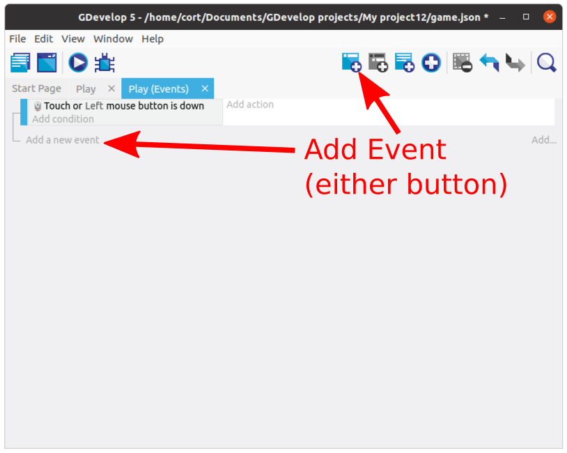
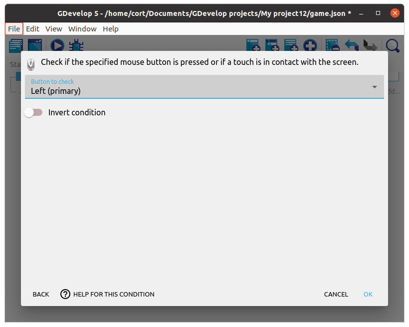
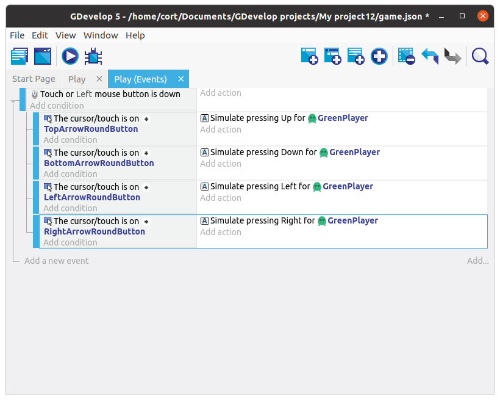

Events
In GDevelop, events define the logic of a game. If you have experience with Scratch, you would have used events before.

Events in Scratch
Each event in GDevelop, consists of conditions and actions. Conditions define when the event will trigger and also select which object are affected by the action, while the actions define what happens when the event triggers.


Events with no conditions will run every frame

First Event
Switch to the events tab...

Then click on the Add new empty event button. You should now have a new event with empty conditions and actions.

Click on Add condition, click Other conditions, and select the Mouse button pressed or touch held condition.

Under Button to check select the Left (primary) button, then click Ok.

Your events tab should now look like this...

Sub Events
That first event will detect when you touch the screen, but it can't tell which button was touched. To do that, we'll add a sub-event under it to detect the buttons. Sub-events are only considered when their parent event are true.
Select the first created event, and click the Add sub-event to the selected event button.

Make sure that the subevent is under the mouse button event. If it is not, just drag it into place.
Next, click on the condition for the sub-event, select the Up arrow, then select cursor/touch is on an object condition. Click Ok.


Action
Now we'll add an action for the sub-event. When the Up arrow is pressed, we want it to simulate an up keypress.
Under the sub-event, click Add action, select the player, then select the Simulate up key press action. Click Ok.

Your events tab should now look like this...

Add the rest
Repeat the steps, adding a sub-event for each direction. When you're done, your events tab should look like this...

Preview the Scene
At this point, you can preview the scene by clicking the Preview button.
Test the controls and make sure that your player character is moving correctly.